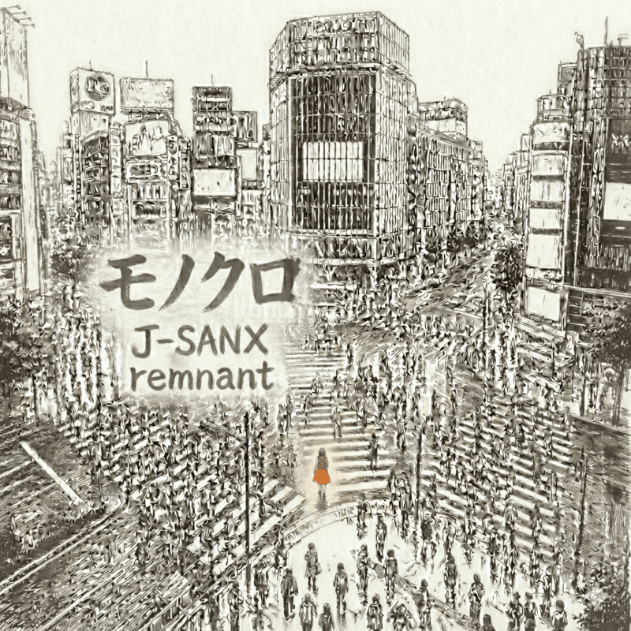
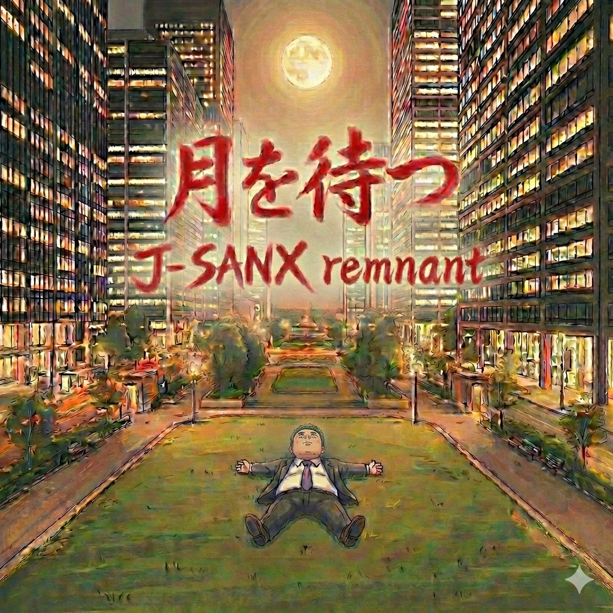

SOUL OF THE FANTASIES
The Official Website of J-SANX remnant
The Official Website of J-SANX remnant
前身バンド「J-SANX」の志を継承し、ソロプロジェクト「J-SANX remnant（J-SANXの残党）」として活動中。
日々の生活の中でふと感じることや、そこから広がる自由な「妄想」をエッセンスに、気負わず、のんびりと、呑気なスタンスで歌っています。
お暇な時に、ぜひ聴いてみてください。



